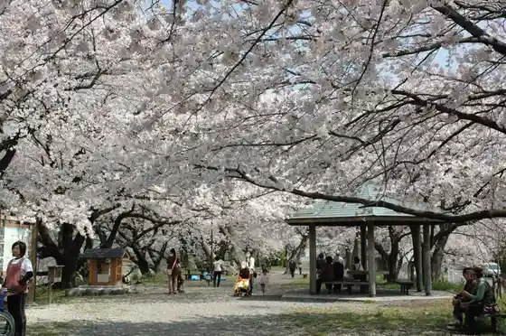
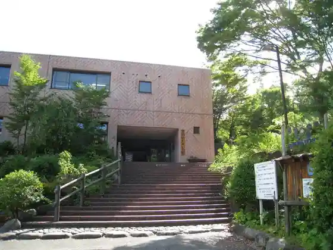
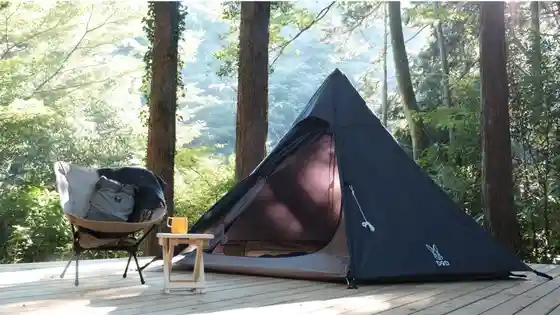

Taiyu Yama Saijo Tera
Minamiashigara, Kanagawa · 0465-74-3121 · Official / source link
Bun Inochi Tsutsumi
Minamiashigara, Kanagawa · Official / source link

Prefectural Ashigara Fureai no Village
Minamiashigara, Kanagawa · 0465-72-2010 · Official / source link

Maruta Forest
Minamiashigara, Kanagawa · 0465-74-4510 · Official / source link

Kintaro no Seika Ato Kintaro Asobi Ishi (Jizo Do)
Minamiashigara, Kanagawa · Official / source link
Minamiashigara Local History Museum
Minamiashigara, Kanagawa · 0465-73-4570 · Official / source link
Ashigara Manyo Park
Minamiashigara, Kanagawa · 0465-73-8053 · Official / source link
Ashigaratoge
Minamiashigara, Kanagawa · Official / source link
Yuhi Falls
Minamiashigara, Kanagawa · Official / source link
Yamashiro Ya
Minamiashigara, Kanagawa · 0465-72-0606 · Official / source link
Roadside Station Ashigara Kintaro no Furusato
Minamiashigara, Kanagawa · 0465-70-1815 · Official / source link
Modan Toji Onriiyu
Minamiashigara, Kanagawa · 0465-72-1126 · Official / source link
Haruki Kei Shiawase Michi (Haru Meki Sakura)
Minamiashigara, Kanagawa · Official / source link
Ichi no Seki Harane (Haru Meki Sakura)
Minamiashigara, Kanagawa · Official / source link
Fukuzawa Park (Haru Meki Sakura)
Minamiashigara, Kanagawa · Official / source link